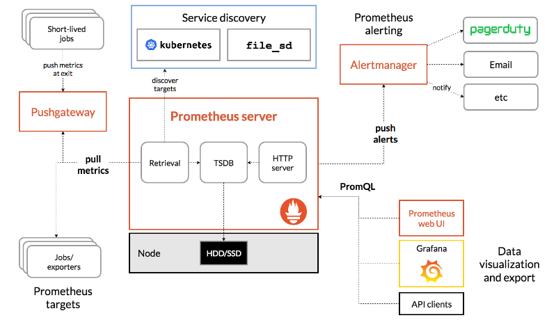

What is Prometheus?
-> It is an open-source system monitoring and alerting toolkit built at SoundCloud beginning in 2012. -> Prometheus is the second project that graduates, after Kubernetes, from the Cloud Native Computing Foundation (CNCF). -> Prometheus pulls metrics (key/value) and stores the data as time-series, allowing users to query data and alert in a real-time fashion. -> At given intervals, Prometheus will hit targets to collect metrics, aggregate data, show data, or even alert if some thresholds are met—in spite of not having the most beautiful GUI in the world. -> Prometheus collects and stores its metrics as time-series data, i.e. metrics information is stored with the timestamp at which it was recorded, alongside optional key-value pairs called labels. -> It collects metrics from configured targets via HTTP calls at given intervals, evaluates rule expressions, displays the results, and can trigger alerts if some conditions are met. -> Prometheus is made up various components; - The main Prometheus server which scrapes and stores time series data - Client libraries for instrumenting application code - Push gateway for supporting short-lived jobs - Exporters for exporting existing metrics from third-party systems as Prometheus metrics in cases where it is not feasible to instrument a given system with Prometheus metrics directly for example in services like HAProxy, StatsD, Graphite, etc. - Alert Manager to handle alerts.Prometheus Architecture
 -> For most use cases, you should understand three major components of Prometheus: 1. The Prometheus server scrapes and stores metrics. Note that it uses a persistence layer, which is part of the server and not expressly mentioned in the documentation. Each node of the server is autonomous and does not rely on distributed storage. 2. The web UI allows you to access, visualize, and chart the stored data. Prometheus provides its own UI, but you can also configure other visualization tools, like Grafana, to access the Prometheus server using PromQL (the Prometheus Query Language). 3. Alertmanager sends alerts from client applications, especially the Prometheus server. It has advanced features for deduplicating, grouping, and routing alerts and can route through other services like PagerDuty and OpsGenie. -> The key to understanding Prometheus is that, it fundamentally relies on scraping or pulling, metrics from defined endpoints. -> This means that your application needs to expose an endpoint where metrics are available and instruct the Prometheus server how to scrape it. -> There are exporters for many applications that do not have an easy way to add web endpoints, such as Kafka and Cassandra (using the JMX exporter).How Does Prometheus Integrate With Your Workloads?
-> Because Prometheus works by pulling metrics (or scrapping metrics, as they call it), you have to instrument your applications properly. -> Officially, Prometheus has client libraries for applications written in Go, Java, Ruby, and Python. Other languages like C#, Node.js, or Rust have support as well, but they’re not official (yet). -> And for those short-lived applications like batch jobs, Prometheus can push metrics with a PushGateway. But keep in mind that the preferable way to collect data is to pull metrics from an application’s endpoint. -> When using client libraries, you get a lot of default metrics from your application. For example, in Go, you get the number of bytes allocated, number of bytes used by the GC, and a lot more. -> You can emit custom metrics such as latency, requests, bytes sent, or bytes received—as well, if needed. But you have to be aware that this type of data might get lost if the application crash or restarts. -> To reduce the risk of losing data, you need to configure an appropriate window in Prometheus to regularly pull metrics. For example, you might configure Prometheus to do this every thirty seconds. -> You can find more details in Prometheus documentation regarding how they recommend instrumenting your applications properly.What is Grafana?
-> As the name suggests, Grafana is the dashboard component of this monitoring system. -> With Grafana you can create, explore and share all of your data through beautiful, flexible dashboards. -> In the nutshell, Grafana collects the data (metrics) from Prometheus & displays that in form of graphs & charts. -> Grafana is a leading time-series, an open-source platform for visualization and monitoring. -> It allows you to query, visualize, set alerts, and understand metrics no matter where they are stored. -> You can create amazing dashboards in Grafana to visualize and monitor the metrics.What is an exporter?
-> An exporter is a library that exports metrics from 3rd party systems, such as Linux servers, to Prometheus. -> To monitor the Linux servers, we’d need Node Exporter. -> Node Exporter is a Prometheus exporter for hardware and OS metrics exposed by *NIX kernels such as CPU, disk, memory usage etc with pluggable metrics collectors. https://opensource.com/article/19/11/introduction-monitoring-prometheusProject Ideas
1. Monitor openVPN Connection 2. Monitor Gitlab Metrics 3. Monitor docker container metrics 4. Monitor Squid logs 5. Configure Grafana Email Alerting 6. Prometheus Alert Manager Email Alerting